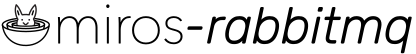

Contents:
Introduction
DevOps
Installation
Quick Start
How it Works
Example
Building a NetworkedActiveObject
Building a NetworkedFactory
Different ways to Troubleshoot Our Programs
Recipes
Reflection
Indices and tables
¶
Index
Module Index
Search Page
About
A networking plugin for miros
Useful Links
miros-rabbitmq on Github
miros
miros on Github
sequence on Github
UMLet (drawing tool)
RabbitMQ Tutorials
basics
work queues
publish subscribe
routing
topics
rpc
RabbitMQ Videos
RabbitMQ in Five Minutes
RabbitMQ Windows Install
This Page
Show Source
Quick search